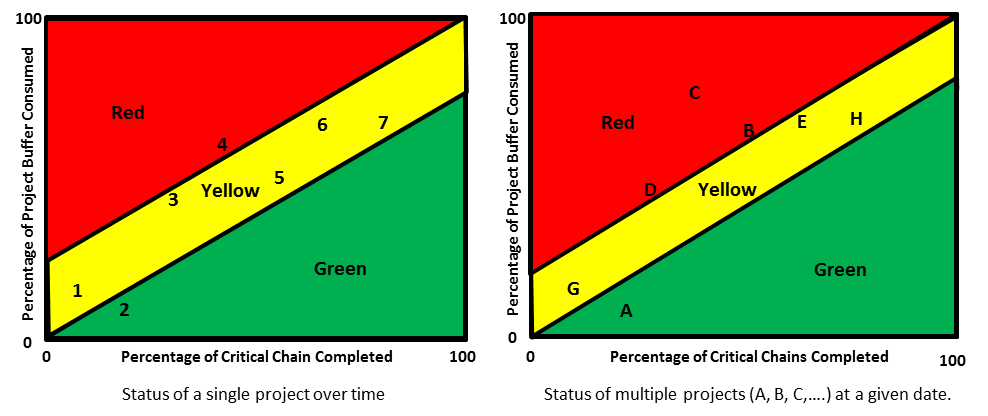

основная проблема (core problem) - часть текущей реальности, которая непосредственно отвечает (т.е. является источником) существования наиболее значительных нежелательных эффектов в текущей реальности изучаемой системы.
Может быть одна или несколько основных проблем, однако обычно от одной до трех основных проблем приходится более 70% НЖЯ в среде.
Иллюстрация: В ДТР ниже сущность 10 является основной проблемой:

Перспектива 1: основная проблема может иметь одно из трех проявлений, либо как:
1. факт и сущность в действительности, например, «Эффективность используется в качестве основной меры в операциях». которые могут быть напрямую связаны через причинно-следственные связи с большинством НЖЯ, или
2. конфликт между D и D 'в основном облаке конфликта, например
D «Использовать локальную эффективность как главную меру» и
D' «Не использовать локальную эффективность в качестве основной меры», или
3. ошибочное предположение, ответственное за конфликт, такой как “простаивающий ресурс - это большая трата”.
Облако основного конфликта также может быть проявлением основной проблемы. При выявлении основной проблемы в ДТР важно понимать, что, поскольку не все НЖЯ одинаково важны и поскольку идентифицированные НЖЯ, используемые для создания ДТР, не включают в себя все НЖЯ, правило 70% является лишь ориентиром, предназначенным для обеспечения что сущность или сущности, идентифицированные как основные проблемы, являются источником большинства значительных НЖЯ.
Объявляя факт или ошибочное предположение основной проблемой, важно понимать, что основная проблема может быть выбрана субъективно. В действительности может быть несколько основных драйверов, которые отвечают за существование более 70% НЖЯ. Лицо, проводящее исследование, может выбрать один из этих основных факторов в качестве основной проблемы в зависимости от уровня полномочий и / или личной стойкости для устранения причины.
Перспектива 2: основную проблему можно определить на четырех уровнях, связанных между собой причинно-следственной связью. Самый низкий уровень - это ошибочное предположение о реальности, которое не позволяет человеку или организации разрешить их основной конфликт.
Второй уровень - это политики, которые являются следствием ошибочного предположения (например, политика, позволяющая решить, на какой стороне конфликта сосредоточиться (D или D ‘), когда переключиться (пока ... сделайте D ... как только ... сделайте D‘ ....) или даже не предпринимать никаких действий сейчас (поддерживать статус-кво), поскольку есть негативы (негативные факторы), связанные как с D, так и с D '.
Третий уровень - это измерения, которые мы вводим, чтобы гарантировать соблюдение политик, в то время как четвертый уровень - это «плохое» поведение, являющееся результатом ошибочных предположений, (локальных оптимумов) политик и / или измерений.
См .: предположение, конфликт ядра, облако конфликта ядра, драйвер ядра, текущее дерево реальности, нежелательные эффекты.
#мп
Синоним: core problem